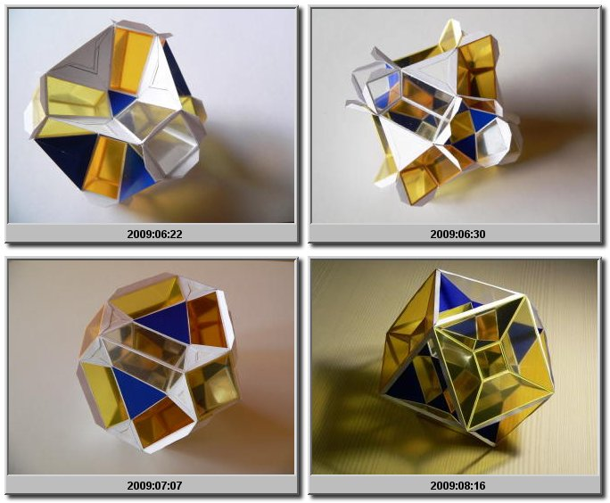

Polychora are the equivalent of polyhedra, but then in the fourth dimension. Since we just live in a three dimensional Euclidean world it is hard for us to imagine how a polychoron "looks" like in "reality". I would suggest not to try. There are other techniques to learn to understand these objects.
One can for instance look at the net of one. The net for a cube is obtained by cutting along the edges and unfolding the area to a flat shape. One such shape can be a cross consisting of 6 squares. For the 4 dimensional hypercube the net consists of 8 cubes, e.g. in the shape of a 3 dimensional cross.
Another way to study 4 dimensional objects is to look at cross sections. For a cube cross sections can for instance be a triangle or a hexagon.
A third way of studying polychora is to project them to the third dimension. The models that are shown here are all projected to the third dimension by a perspective projection. The result consists of cells within cells and as a consequence either faces need to be left out or faces need to be transparent to investigate the cells that are located inside. I chose the latter
The model above is a rectified pentachoron. As the name suggests it can be derived from the pentachoron, which consists of 5 tetrahedra. In this model the tetrahedra have become octahedra and the vertices, where 4 tetrahedra meet, have become tetrahedra. All octahedra consist of 4 transparent and 4 non-transparent yellow faces; all tetrahedra just consist of non-transparent yellow faces. A small video clip makes all a bit clearer:
The fourth dimension consists of volumes that can be parallel or intersect, just like planes can (in the third dimension). In the model above the perspective projection deforms all the 5 octahedra except for 1; the octahedron that encapsulates the whole model. Similarly the projection deforms all 5 tetrahedra except for one: the one in the centre of the model. The octahedron on the outside and the tetrahedron at the centre are not deformed, because in the fourth dimension they are positioned in volumes that parallel to the projection volume that is . the volume we live in. The octahedron is bigger, since that volume is the closest to the camera point. The deformed octahedra and tetrahedra are not parallel to the projection volume, i.e. they intersect the volumes of the outer octahedron and centre tetrahedron. The intersections are the faces of these polyhedra.
The model above is the projection of a rectified tesseract, which is a four dimensional hypercube. As the name suggests it can be derived from the tesseract or hypercube, which consists of 8 cubes. In the rectified tesseract the cubes have become cuboctahedra and the vertices, which are shared by 4 cubes, have become tetrahedra. In the model all the tetrahedra are (non-transparent) blue in the cuboctahedra the squares are transparent (red) and the triangles are blue. Two cuboctahedra are not deformed by the perspective projection. Those are the outer one and the one in the centre. Both are in a volume that is parallel to the projection volume. Again the outer cuboctahedron is closest to the camera point and the inner is the furthest away from the camera point. Again a small video clip makes all a bit clearer:
From just a picture it is difficult to see how the model looks inside. The image below shows some stages of the construction, so it easier to understand how the model is built up:
And here is video I made of the model:
2009-08-30